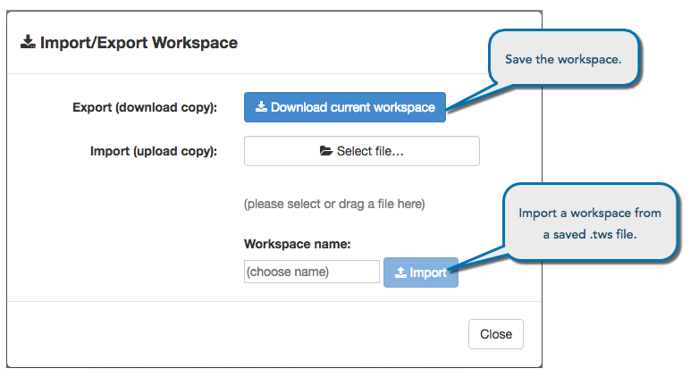

TT Desktop allows you to save a configured workspace by exporting it as single files on your workstation. You can also give the file to others who can then import it to their own list of workspaces.

To export a workspace:
Save all changes in your workspace by clicking the Save icon.
Click the File button to open the menu.
With the File menu open, press and hold the Shift key and select Import/Export.
Click Download the current workspace to save a copy of the workspace as a file with the extension .tws.
Enter the name for the workspace file and click Save.
In the Import/Export Workspace dialog, click Close.
To import a workspace:
Save all changes in your workspace by clicking the Save icon.
Click the File button to open the menu.
With the File menu open, press and hold the Shift key and select Import/Export.
Click Select File to choose a .tws workspace file to upload.
You can also drag and drop a .tws file under the Select File button.
Enter a name for the workspace, and click Import.
Note: Refresh your browser to access the imported workspace.
In the Import/Export Workspace dialog, click Close.